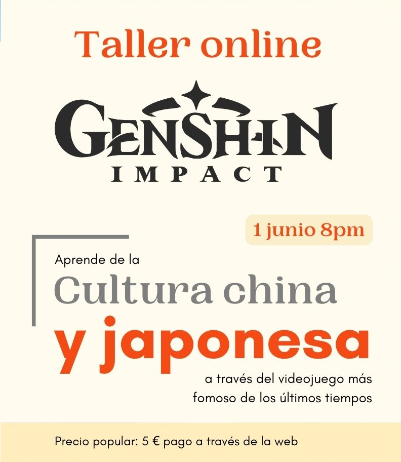

Genshin Info
Introduccion
Bienvenido a Genshin Info, aqui vas a poder descubrir toda la historia hasta el dia de hoy sobre Genshin Impact,
desde el inicio cuando nos dejan escojer el gemelo hasta la ultima actualizacion del juego en la region de Sumeru.
Tambien hay un apartado con todo lo que se sabe por ahora sobre la antigua ciudad tan avanzada llamada Khaenri'ah.
Como mucha gente sabra, Genshin Impact es un videojuego de accion y aventura desde uno a cuatro jugadores pero tambien tiene una
gran historia no solo del juego si no tambien de todas las regiones que vas visitando y el rol que obtienen varios personajes segun los sucesos
anteriores a nuestra llegada. Los jugadores pueden explorar Teyvat, interactuar con personajes no jugables, completar misiones y derrotar enemigos para
aumentar su nivel de aventurero y desbloquear nuevas habilidades. El juego también cuenta con un sistema de combate en tiempo real y un sistema
de elementos mágicos, que permiten a los jugadores usar diferentes tipos de habilidades y estrategias en el combate.
Genshin Impact es gratuito para jugar, pero también ofrece compras dentro del juego para obtener personajes y elementos adicionales.
Aqui os dejamos algunas de sus redes sociales i la pagina web del juego para poder descargarlo de manera totalmente gratuita.
Genshin Impact
•
Hoyolab
•
Youtube
•
Discord
•
Facebook
•
Twitter
•
Instagram
Noticias
Avance de la trama de Genshin Impact
Plataforma «Baladas del viento»
Consejos sobre «Baladas del viento»
Detalles de «Hálito vientoflorido»
Dehya: Sentimientos ardientes
